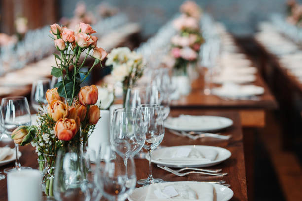
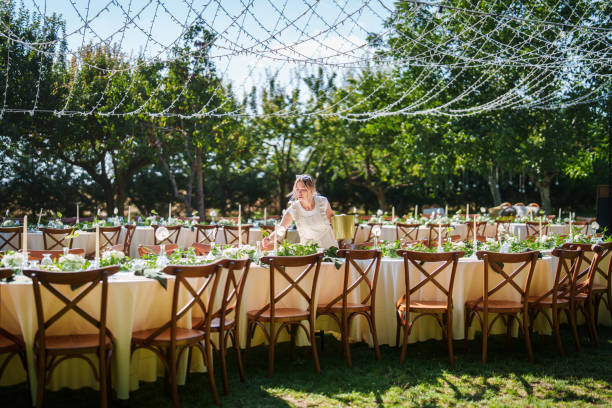
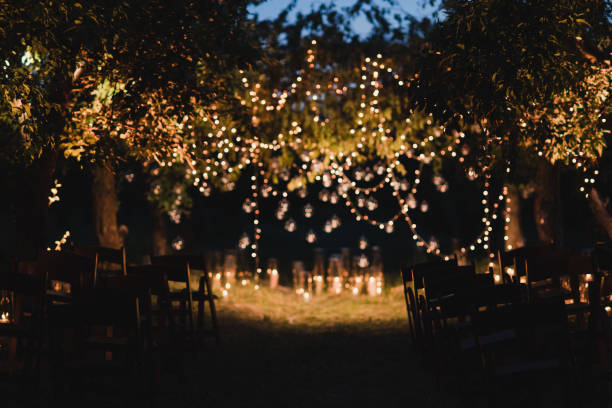
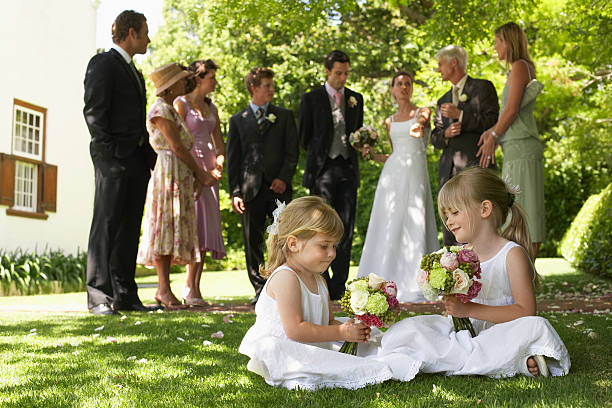

Une grande cour pour une table invitante. Un gazebo pour l'ombre des après-midis chauds. Et un carrousel, planté là comme s'il attendait que nos enfants viennent enfin le faire tourner.
C'est la Californie et le Québec qui se croisent, sous le même toit, pendant que tout le monde est en santé, assez jeune, assez disponible pour que ça arrive. Constance et Jean-Francoys au centre de tout ça.
Nous prévoyons de l'aide et des gardiennes pour enfants afin que petits et grands profitent de la soirée en toute tranquillité. Traiteur, musique... en toute simplicité, une soirée d'été transformée en rassemblement marquant.
Vous ouvrez la porte — on prend soin du déroulement.




Une longue table dressée dans la cour, les guirlandes qui s'allument à mesure que le ciel s'assombrit. Les cœurs seront déjà tous là — le reste n'est qu'une formalité.
Nous prévoyons de l'aide et des gardiennes pour enfants afin que petits et grands profitent de la soirée en toute tranquillité. Traiteur, musique... en toute simplicité, une soirée d'été transformée en rassemblement marquant.
On s'occupe du reste — vous, ouvrez simplement la porte.